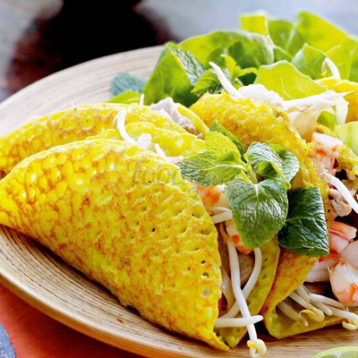
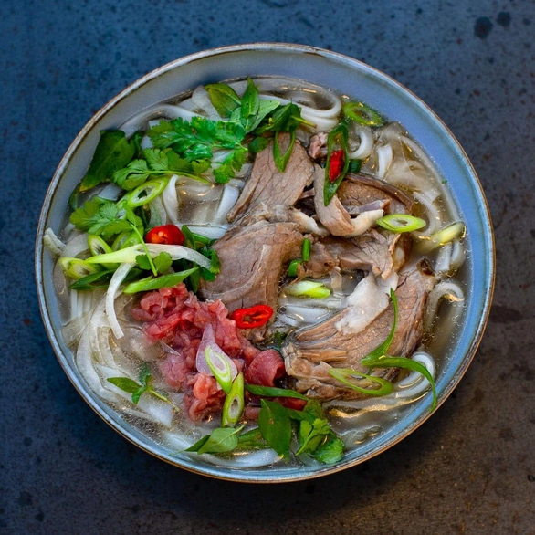

<div style="margin-top: 20px;">
    <div class="container">
        <div class="text-center">
            <h2 class="section-heading text-uppercase">Best Seller</h2>
        </div>
        <ul class="timeline">
            <li><a href="../../assets/img/5.jpg" target="_blank">
                    <div class="timeline-image"></div>
                </a>
                <div class="timeline-panel">
                    <div class="timeline-heading">
                        <h4>Bánh mì</h4>
                    </div>
                    <div class="timeline-body">
                        <p class="text-muted">Bánh mì Việt Nam là một loại bánh mì đặc trưng, 
                            thường được chế biến và ăn kèm theo cách riêng biệt tại Việt Nam. 
                            Mặc dù gốc từ ảnh hưởng của bánh mì Pháp, bánh mì Việt Nam đã trở 
                            thành một biểu tượng ẩm thực độc đáo và phổ biến.</p>
                    </div>
                </div>
            </li>
            <li class="timeline-inverted">
                <a href="../../assets/img/6.jpg" target="_blank">
                    <div class="timeline-image"></div>
                </a>
                <div class="timeline-panel">
                    <div class="timeline-heading">
                        <h4>Bánh xèo</h4>
                    </div>
                    <div class="timeline-body">
                        <p class="text-muted">Bánh xèo là một món ăn truyền thống của Việt Nam. 
                            Tên "bánh xèo" xuất phát từ âm thanh "xèo xèo" mà bánh phát ra khi nướng. 
                            Đây là một loại bánh mỏng, giòn, vàng nâu, được làm từ bột gạo, nước cốt dừa, 
                            nước lọc, và nước cà cuống để tạo màu.</p>
                    </div>
                </div>
            </li>
            <li>
                <a href="../../assets/img/7.jpg" target="_blank">
                    <div class="timeline-image"></div>
                </a>
                <div class="timeline-panel">
                    <div class="timeline-heading">
                        <h4>Phở</h4>
                    </div>
                    <div class="timeline-body">
                        <p class="text-muted">Phở là một món ăn truyền thống của Việt Nam, nổi tiếng và 
                            phổ biến khắp cả nước cũng như trên thế giới. Đây là một loại súp nước dùng 
                            cơ bản, thường được nấu từ xương gà hoặc bò, cùng với các gia vị tự nhiên như 
                            hành, gừng, và các loại thảo mộc khác. Một thành phần quan trọng của phở là bún 
                            (bún phở) và thịt (thường là thịt bò hoặc thịt gà). Phở thường được ăn kèm với 
                            rau sống, lá rau mùi, lá rau húng, giá đỗ, và ớt tươi.</p>
                    </div>
                </div>
            </li>
            <li class="timeline-inverted">
                <a href="../../assets/img/8.jpg" target="_blank">
                    <div class="timeline-image"></div>
                </a>
                <div class="timeline-panel">
                    <div class="timeline-heading">
                        <h4>Gỏi cuốn</h4>
                    </div>
                    <div class="timeline-body">
                        <p class="text-muted">Gỏi cuốn là một món ăn truyền thống Việt Nam, 
                            còn được gọi là "spring roll" trong tiếng Anh. Đây là một món ăn nhẹ, 
                            tươi ngon và thường được ăn kèm với nước mắm pha chế. Gỏi cuốn thường được 
                            làm từ những nguyên liệu tươi ngon và nhẹ nhàng, cuốn trong lá bánh tráng mỏng 
                            để tạo thành một cuộn dài và mảnh.</p>
                    </div>
                </div>
            </li>
            <li class="timeline-inverted">
                <div class="timeline-image">
                    <h4>
                        Be Part
                        <br />
                        Of Our
                        <br />
                        Restaurant!
                    </h4>
                </div>
            </li>
        </ul>
    </div>
</div>